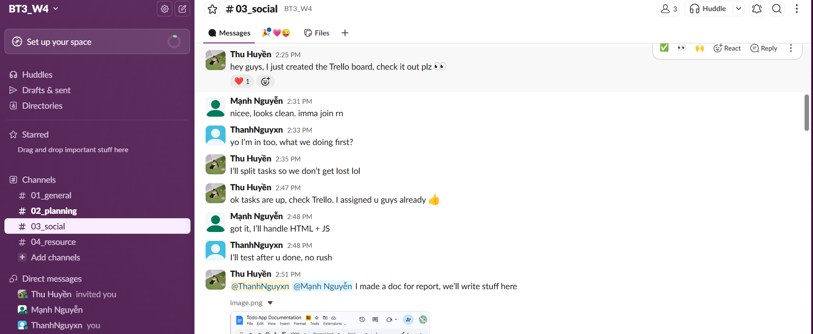
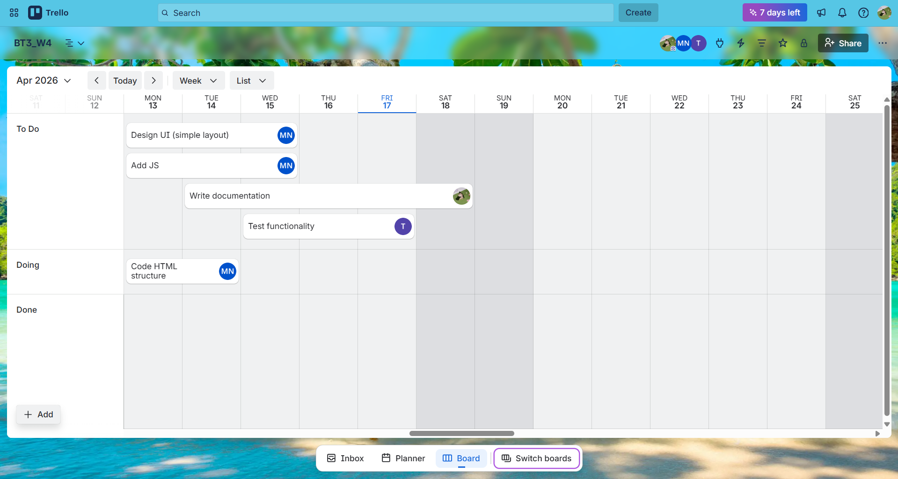
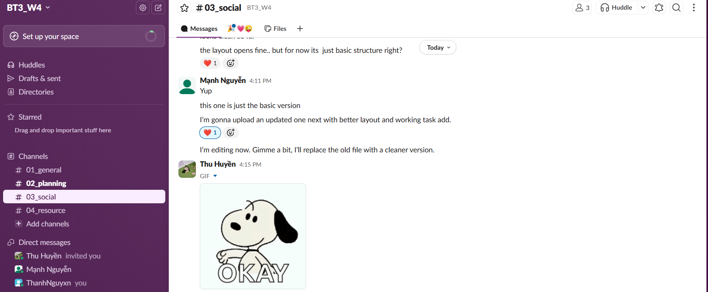
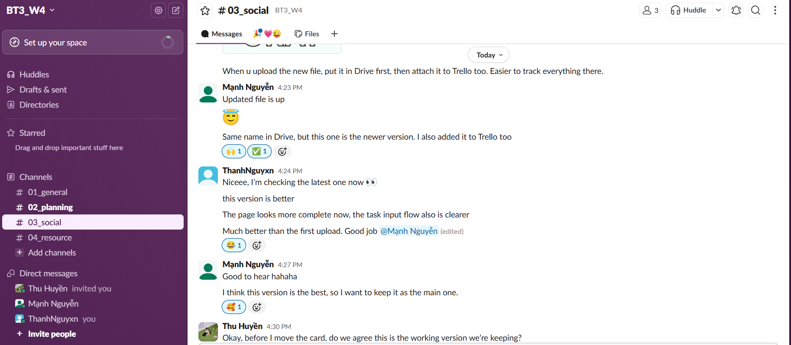
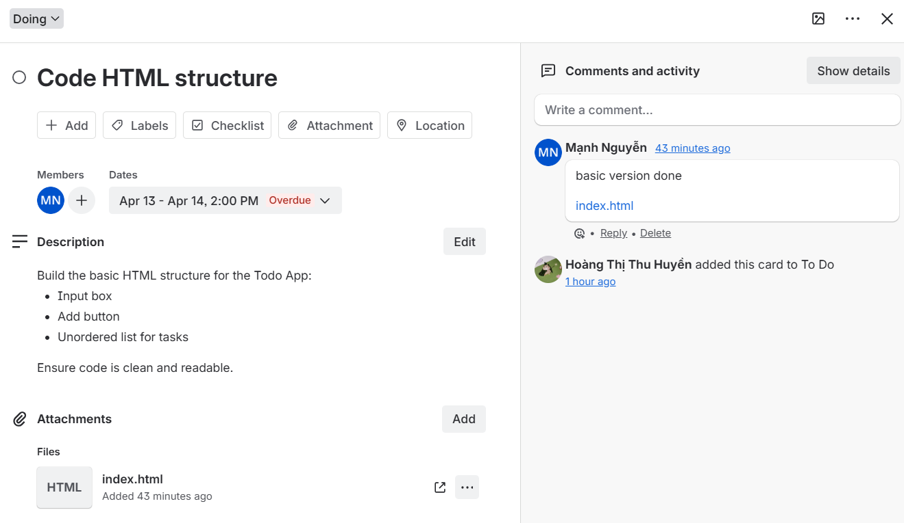
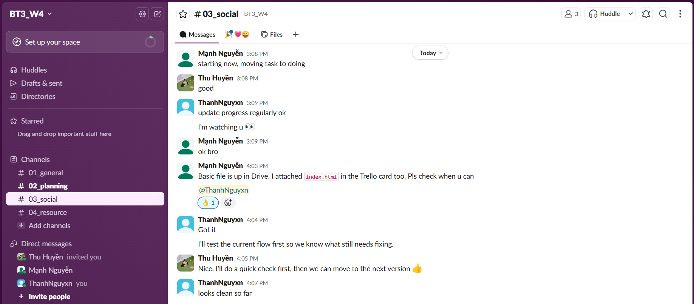
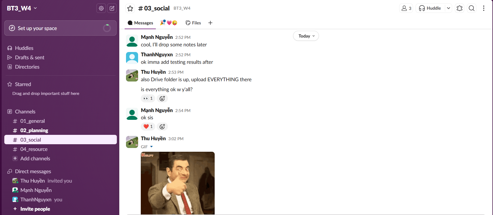
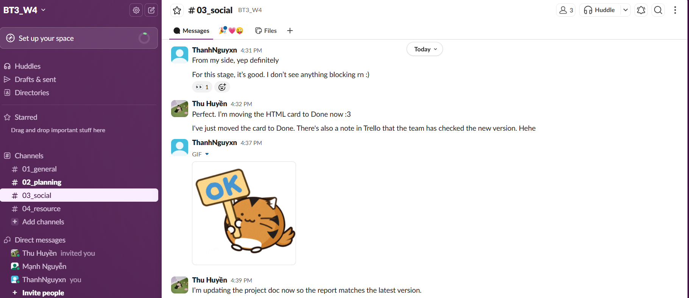
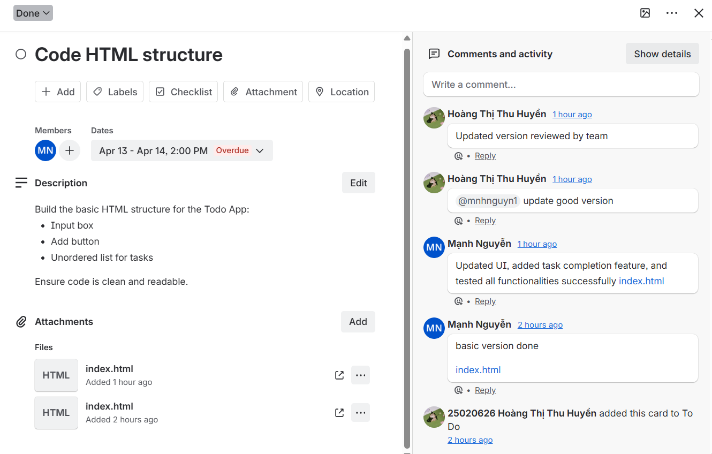

Trường Đại học Công nghệ Thông tin — ĐHQG TP.HCM
Khoa Công nghệ Phần mềm
Dự án: TaskFlow — Todo App | Nhóm: Huyền · Mạnh · Thành
Nhóm chúng tôi (gồm 3 thành viên: Hoàng Thị Thu Huyền, Mạnh Nguyễn và Nguyễn Tuấn Thành) đã thực hiện dự án xây dựng ứng dụng TaskFlow — Todo App. Đây là một ứng dụng web quản lý công việc với giao diện hiện đại (aurora theme, glassmorphism), hỗ trợ thêm/xóa/hoàn thành task, phân loại theo priority, và lưu trữ bằng localStorage.
Để phối hợp làm việc hiệu quả, nhóm đã sử dụng 4 công cụ hợp tác trực tuyến thuộc 3 nhóm khác nhau theo yêu cầu đề bài:
Workspace trên Slack được đặt tên là BT3_W4, với các kênh tách biệt theo mục đích: #01_general (tổng quát), #02_planning (lên kế hoạch), #03_social (trao đổi thoải mái), và #04_resource (tài nguyên). Board Trello sử dụng hệ thống Kanban (To Do → Doing → Done) để theo dõi tiến độ từng card. Google Drive được dùng để lưu trữ tập trung mã nguồn và tài liệu, còn Google Docs phục vụ soạn báo cáo chung.
Dưới đây là tiến trình công việc của tôi (ThanhNguyxn) trên các công cụ hợp tác, được mô tả theo thứ tự thời gian dựa trên các ảnh minh chứng:
Dưới đây là các ảnh chụp màn hình minh chứng cho quá trình tham gia của tôi trên các công cụ hợp tác. Tất cả đều thể hiện rõ tên tài khoản ThanhNguyxn đang tương tác trực tiếp trên hệ thống.









Qua bài tập này, tôi đã trải nghiệm thực tế việc sử dụng 4 công cụ hợp tác trực tuyến thuộc các nhóm khác nhau (quản lý dự án, giao tiếp, lưu trữ, soạn thảo) để phối hợp làm việc nhóm. Mỗi công cụ đều có thế mạnh riêng, và khi kết hợp chúng một cách có hệ thống, hiệu quả làm việc nhóm được nâng cao đáng kể.
Tổng kết, trong suốt 1 tuần thực hiện dự án, tôi đã tham gia hơn 15 lượt tương tác/thảo luận trên Slack (bao gồm nhắn tin, reaction, review code qua chat), theo dõi và xác nhận nhiều lần trên Trello, và sử dụng Drive để kiểm tra file. Vai trò Tester & Reviewer cho phép tôi đóng góp vào chất lượng sản phẩm cuối cùng, đồng thời rèn luyện kỹ năng giao tiếp, đánh giá và phối hợp trong môi trường làm việc nhóm trực tuyến.